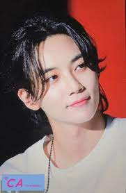
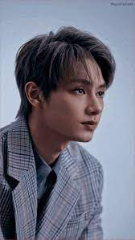
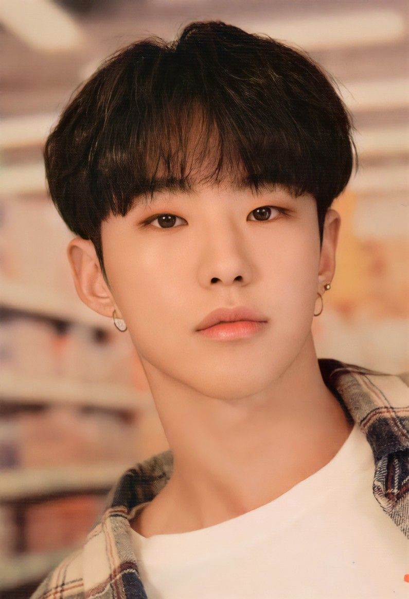
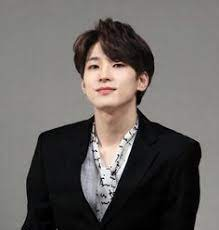
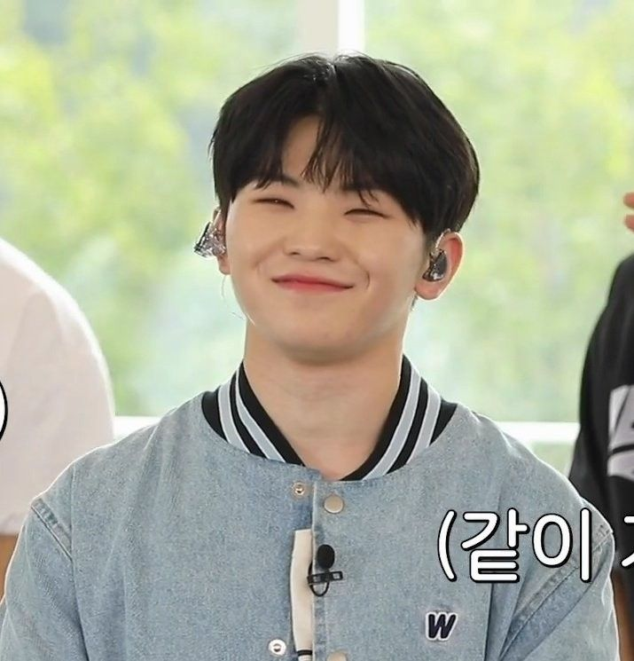
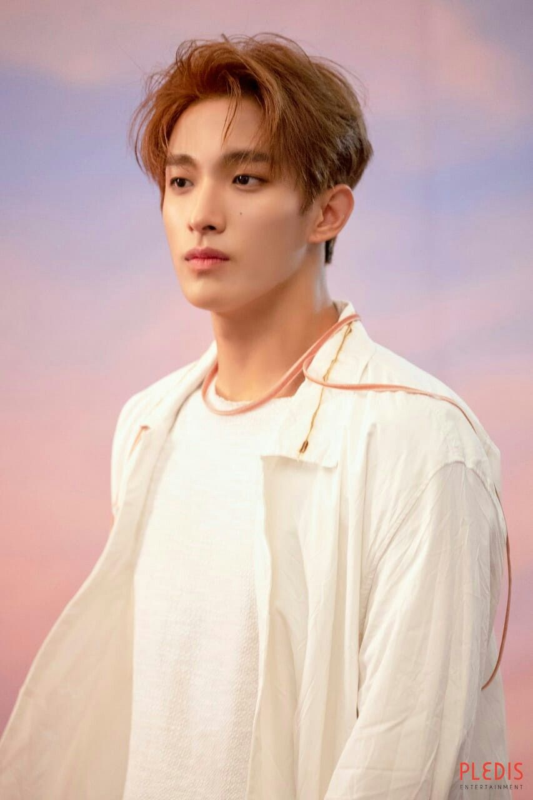
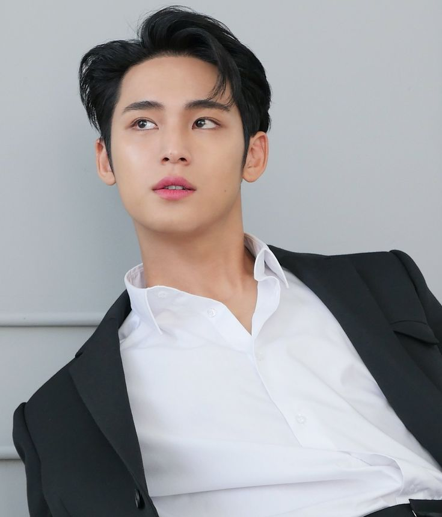
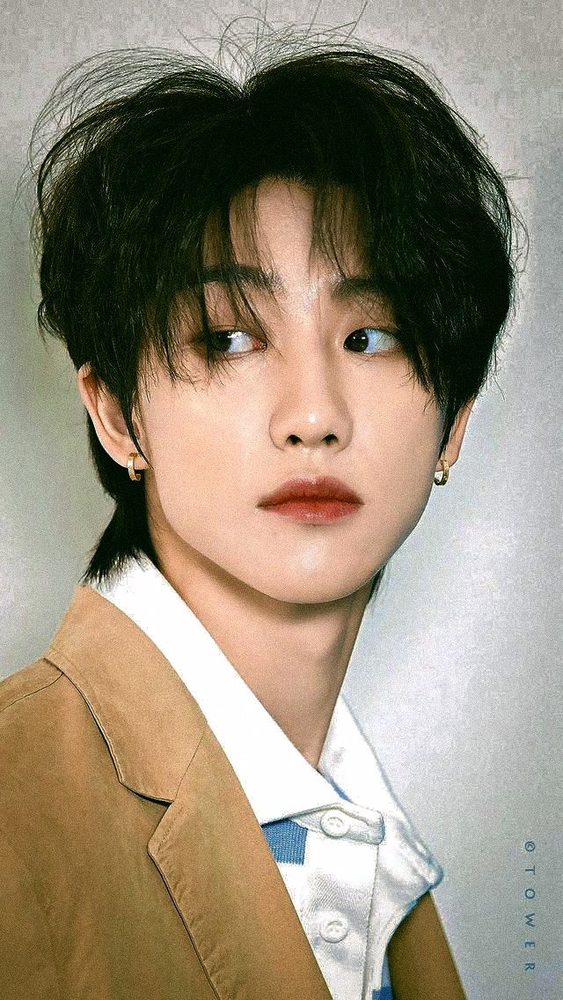
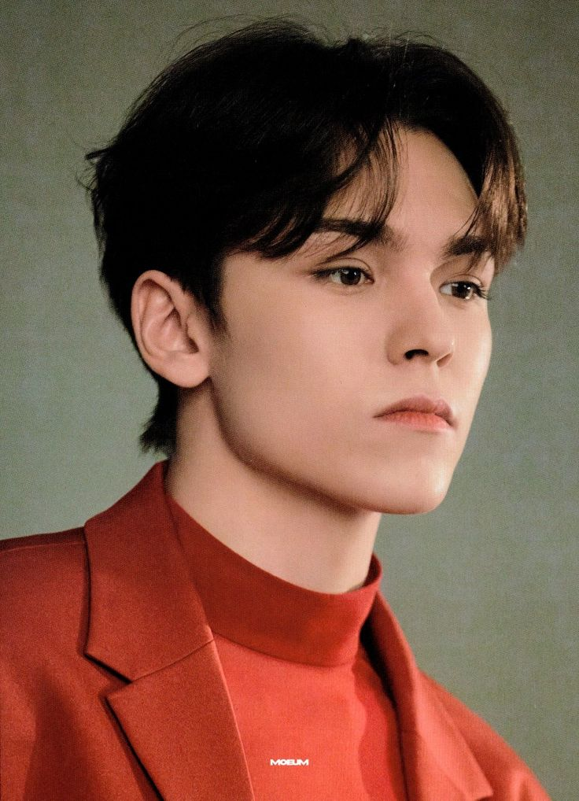
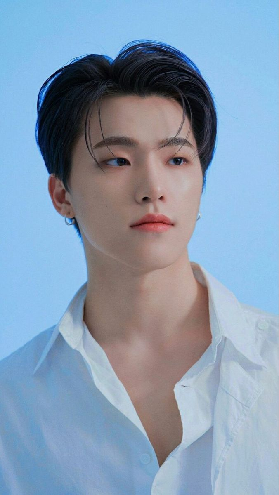

Introduction
Seventeen is a South Korean boy band formed by Pledis Entertainment. The group debuted on and consists of thirteen members.They have three units: vocal, hip-hop, and performance. The vocal unit comprises Woozi, Joshua, DK, Jeonghan and Seungkwan. On the other hand, the hip-hop unit consists of S.Coups, Wonwoo, Mingyu, and Vernon. And lastly, the performance unit with members Hoshi, Jun, The8, and Dino. SEVENTEEN's name is said to be derived from "13 members + 3 units + 1 group," expressing how thirteen individuals from three different sub-units come together to form one powerful group.
Members
- S.Coups (Leader)
- Jeonghan 
- Joshua
- Jun 
- Hoshi (Leader of Performance Unit) 
- Wonwoo 
- Woozi (Leader of Vocal Unit) 
- DK 
- Mingyu 
- The8 
- Seungkwan
- Vernon 
- Dino 
S. Coups, born Choi Seung-cheol, is the charismatic leader of SEVENTEEN. He not only leads the entire thirteen-member group but also heads its talented hip-hop unit alongside members Mingyu, Wonwoo, and Vernon. Known for his impressive rapping skills and dedication to the group, S. Coups has also actively participated in writing over 70 of SEVENTEEN's songs, contributing greatly to their unique sound.
Jeonghan, also known as Yoon Jeonghan, is a South Korean singer and lead vocalist of the popular K-pop group SEVENTEEN.He's known for his angelic visuals, caring personality, and smooth vocals.
Joshua, also known as Hong Jisoo, is a Korean-American singer and dancer. He's a captivating lead vocalist in the popular K-pop group SEVENTEEN, known for his smooth vocals and powerful stage presence. He debuted with the group in 2015 and has since captivated fans worldwide.
Jun, born Wen Junhui. Born in China and he is a singer, dancer, and an actor. He is most known for his powerful stage presence and smooth vocals.
Hoshi, born Kwon Soon-young, is a powerhouse performer in SEVENTEEN. He's a main dancer, lead vocalist, and the leader of their performance team, known for his energetic stage presence and choreography skills.
Jeon Wonwoo, or simply Wonwoo, does rapping , singing, and songwritering. He's best known as the lead rapper and sub-vocalist of SEVENTEEN. He's also known for his deep voice, good looks, and introverted personality.
Woozi, whose real name is Lee Ji-hoon, is a singer, songwriter, and record producer. He's best known as the main vocalist and leader of the vocal unit in SEVENTEEN. Woozi not only sings and performs, but is also the group's main producer, having written and produced the majority of their songs. He's also dabbled in composing for other artists, showcasing his diverse musical talents.
DK, whose real name is Lee Seokmin, is a main vocalist SEVENTEEN. He's known for his powerful vocals and infectious energy, often described as the "happy virus" by his fellow members. DK also leads the group's sub-unit BSS (BooSeokSoon) and has even ventured into acting, playing the lead role in the musical "XCalibur."
Mingyu is a multifaceted artist and the lead rapper, vocalist, and visual of the popular SEVENTEEN. He's known for his rapping skills, soulful lyric writing, and charming visuals. Beyond music, Mingyu is the "Housewife Mingyu" to fans for his love of cleanliness and cooking talents. He's also a talented artist and enjoys photography.
The8, whose real name is Xu Minghao, is a singer, dancer, and rapper in SEVENTEEN. He's a member of the performance unit. Known for his incredible dance skills, he even earned his nickname "The8" after placing in the top 8 at a dance competition! He also had a successful solo debut in 2019 with the single "Dreams Come True."
Seungkwan, born Boo Seung-kwan, is a an entertainer known for his powerful vocals and bright personality. He's a main vocalist where he also contributes to the vocal unit of SEVENTEEN and the BSS sub-unit with fellow members Hoshi and DK. Beyond music, Seungkwan is a variety show regular, bringing his humor and charm to audiences in shows like "Amazing Saturday" and "Racket Boys."
Vernon, or Hansol Vernon Chwe, is a rapper, vocalist, and visual member of SEVENTEEN.He's known for his smooth rapping, charming personality, and bilingualism (Korean and English). As part of SEVENTEEN's Hip-hop Team, he contributes to the group's music with his impressive flow and songwriting skills.He also showcases his vocal abilities occasionally and is considered a visual member due to his attractive features.
Dino, whose real name is Lee Chan, is a captivating member of SEVENTEEN. He's known for being the group's main dancer, dazzling fans with his powerful and intricate moves. His talents extend beyond dance, though, as he also contributes as a sub-vocalist and lead rapper, adding dynamism to SEVENTEEN's music. As the youngest member, often referred to as the "maknae," Dino brings youthful energy and charm to the group.
Albums
Seventeen has released numerous albums throughout their career, including studio albums, mini-albums, and special albums. Here are some of their notable releases:
- 17 Carat (2015)
- BOYS BE (2017)
- TEEN, AGE (2017)
- Your Choice (2021)
- Attacca (2022)
- SECTOR 17 (2022)
- Face the Sun (2023)